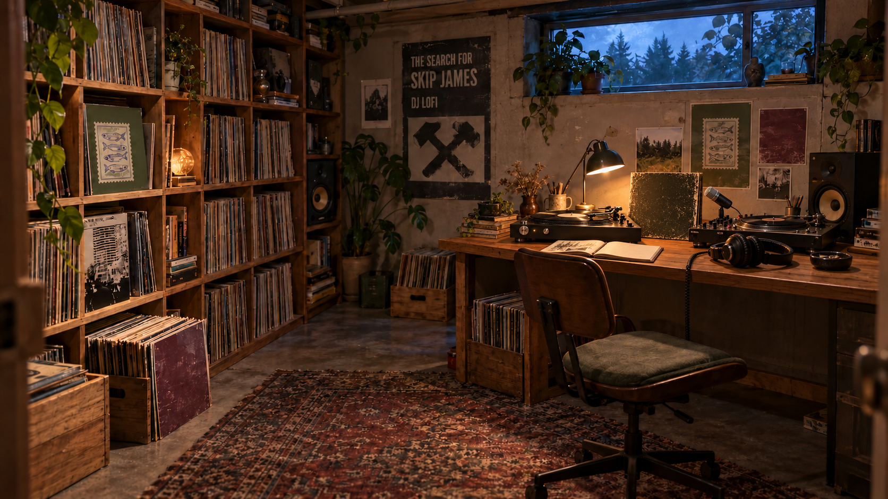
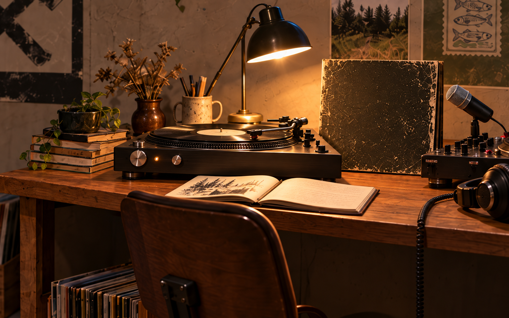
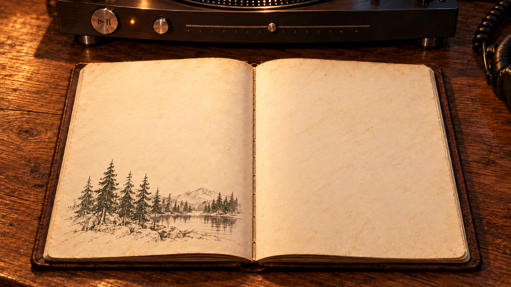
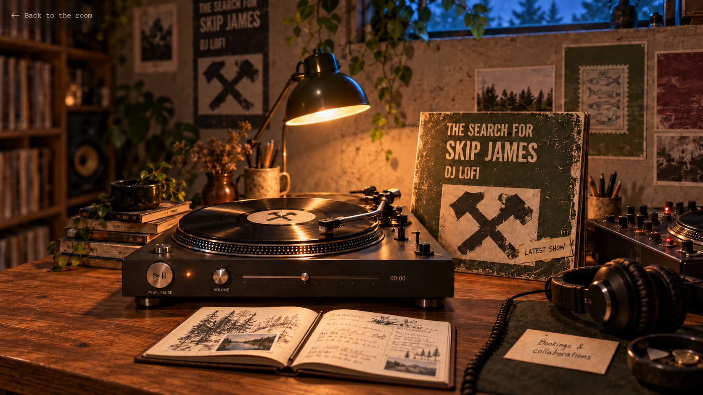

From the notebook
Read on Substack ↗



Notes
Portland, Oregon
Dusty grooves. Open ears.
Come in.
Stay for a record.Come in.Stay for a record.
Drag to look around
At the listening desk
A seat for listening.
Choose a show, explore the turntable, or open the notebook.
Playing on MixcloudOpen original ↗